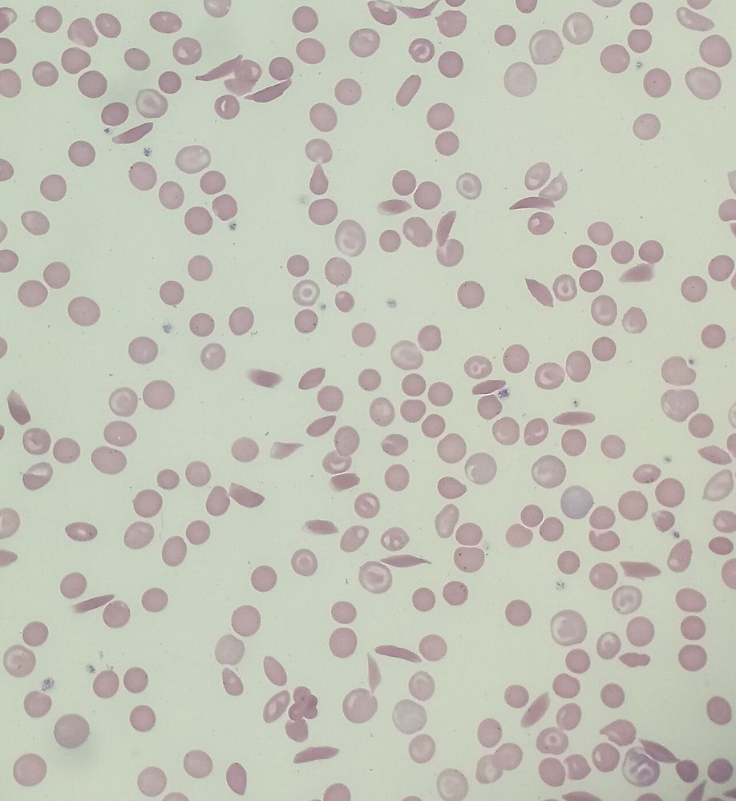

🩺 בוקר טוב רפואה
תרופה ותיקה, חדשה טובה לילדים וילדות עם אנמיה חרמשית
7 באוקטובר 2026 ממהדורה 2 · 11 באוקטובר 2026
אנמיה חרמשית היא מחלת דם תורשתית. תאי הדם האדומים, שבדרך כלל עגולים, מתעקמים לצורה של חרמש (מגל), וזה גורם לכאבים ולמחלות. כל שנה נולדים איתה בערך 550 אלף ילדים וילדות, רובם באפריקה שמדרום לסהרה.
יש תרופה, הידרוקסיאוריאה, כדור אחד ביום שעוזר לגוף לייצר סוג של המוגלובין (כמו של תינוקות לפני הלידה) שמונע מהתאים להתעקם. אבל רופאים ורופאות במקומות עניים חששו שהיא תגביר זיהומים, כמו מלריה.
מחקר שפורסם ב־7 באוקטובר 2026 בכתב העת The Lancet Haematology עקב יותר מעשר שנים אחרי 606 ילדים, ילדות וצעירים באנגולה, בקונגו, בקניה ובאוגנדה. התוצאה: הזיהומים לא התגברו. להפך, ככל שהמינון עלה, הסיכון למלריה ירד בכ־51%. החוקרים והחוקרות ממליצים לתת את התרופה לעוד ילדים וילדות.
💬 לחשוב ולשוחח: החוקרים עקבו אחרי הילדים יותר מעשר שנים. למה לדעתכם ולדעתכן חשוב לבדוק תרופה לאורך זמן רב כל כך?
מקורות וקרדיטים
📰 מקורות המידע
- Children Living With Sickle Cell Can Be Treated Safely Using Hydroxyurea · Cincinnati Children’s (7 באוקטובר 2026)
📖 להעמיק ולקרוא עוד
- אנמיה חרמשית · ויקיפדיה
תמונה: SpicyMilkBoy · רישיון: CC BY-SA 4.0 · מקור התמונה
הידיעה נכתבה במילים שלנו על סמך המקורות.